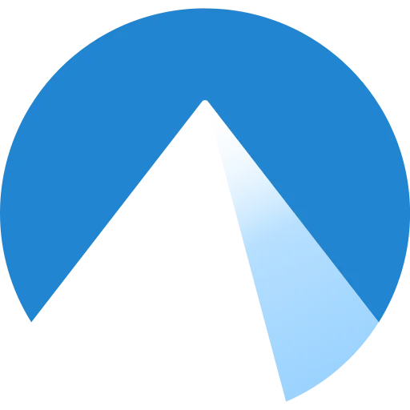

<!-- Shared Footer Component -->
<link rel="stylesheet" href="footer_style.css">
<footer id="contact" class="footer-section glass">
  <div class="footer-content">
    <div class="social-icons">
      <a href="https://github.com/Squashable" target="_blank" aria-label="GitHub"></a>
      <a href="https://www.linkedin.com/in/josh-hudgell/e" target="_blank" aria-label="LinkedIn"></a>
      <a href="https://www.youtube.com/@OverheadJungle" target="_blank" aria-label="YouTube"></a>
      <a href="https://codeberg.org/Squashable" target="_blank" aria-label="Codeberg"></a>
    </div>
  </div>
</footer>
